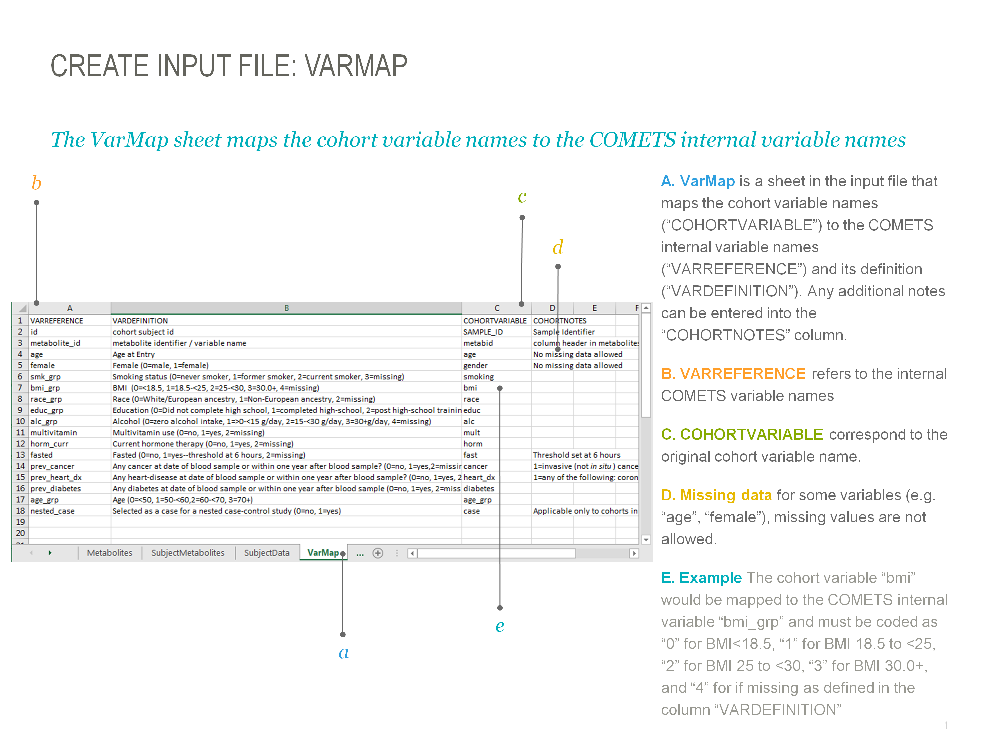

Chapter 2 Step-by-Step Guide
We describe step by step for correlation analyses.
2.1 Step 2 Create input file
2.1.1 Metabolites
2.1.2 Subject Metabolites
2.1.3 Subject Data
2.1.4 Varmap
The varmap is blah blah
*varmap* sheet maps the cohort variable names to the COMETS internal variable names.

Figure 2.1: Input varmap
We know from